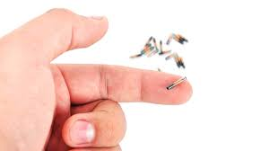

Most good programmers do programming not because they expect to get
paid or get adulation by the public,but because it is fun to program.
“You can do amazing things with code, and it's only getting more powerful” -Elon Mask
About Me
BSIT 2C Student!
You can call me 'tinay' for short. I love writing a story, a article when my mood is in good hehehe.
I Live in Pandan, Daraga, Albay. Loves to eat, read books and watch cartoons. My hobbies are playing badminton sometimes during my leisure time.
I'm a friendly person thats why i have a lot of friends in school, to our community but in some areas or maybe sometimes actually i feel shy
especially when i don't know more that person. I'm a loving daughter and ate to my baby brother. I study hard eventhough its difficult because
i have no loptop, but its not my hindrances just to stop dreaming and pursue what i started. I can say that this course is'nt for me but i used
to love it maybe somestimes i may feel so down but it nevers me fail. One thig i learn from myself is that don't give up and in the last you will make it.
Personal Background
Birthday: January 13, 2004
Place of Birth: Albay, Provincial, Hospital
Age: 19
Gender: Female
Height: 150m
Weight: 40kg
Educational Background
College: Bicol University College of Science BS Information Technology 2020-2023
Senior High: Malabog National High School 2018-2020
Secondary: Malabog National High School 2014-2018
Elementary: Busay Elementary School 2008-2014
Skills
Leadership
Problem-Solving Abilities
Designing
Networking
Portfolio
Articles i wrote in Special Topics In IT this semester.
Human Cloning can be used to store and analyze genetic data, which is essential for cloning.
It can also play a role in public perception and understanding of human cloning.
Information Technology plays a crucial role in wearable tracker devices.
It represent a significant intersection of physical health and Information Technology,
and have the potential to revolutionize the way we think about and manage your health.

Microchipping represents a significant intersection of Technology and personal privacy,
IT is intimateley related to microchipping, as the devices rely on computer chips and electronic sensors to function.
The chips contain unique identification number and are powered by an electromagnetic field generated by the scanner.
An AI voice generator works by utilising text to speech technology. Simply enter your text, select your pace and place pauses where necessary, then hear the generated voice out loud.
Thanks to their natural-sounding tone, AI Voices are now used in a variety of applications.
Digital media enables students to connect with teachers and other students, as well as the world around them, including peers in other countries.
By using technology such as Skype, you can enable your students to make connections with each other while also reaching out across borders.
Blog
One of my work during first year in Introduction to Computing. When my professor teach us how to assemble and disassemble a computer.
Just click the button below!^^
One of my work in Physical Education Basic Bodily Movements. I create a steps in doing this acivity that's have a basic bodily movements.
Just click the button below!^^
Get to know me more? Just watch the video i made for introducing myself as for who i am.

 Human Cloning can be used to store and analyze genetic data, which is essential for cloning.
It can also play a role in public perception and understanding of human cloning.
Human Cloning can be used to store and analyze genetic data, which is essential for cloning.
It can also play a role in public perception and understanding of human cloning. An AI voice generator works by utilising text to speech technology. Simply enter your text, select your pace and place pauses where necessary, then hear the generated voice out loud.
Thanks to their natural-sounding tone, AI Voices are now used in a variety of applications.
An AI voice generator works by utilising text to speech technology. Simply enter your text, select your pace and place pauses where necessary, then hear the generated voice out loud.
Thanks to their natural-sounding tone, AI Voices are now used in a variety of applications. Digital media enables students to connect with teachers and other students, as well as the world around them, including peers in other countries.
By using technology such as Skype, you can enable your students to make connections with each other while also reaching out across borders.
Digital media enables students to connect with teachers and other students, as well as the world around them, including peers in other countries.
By using technology such as Skype, you can enable your students to make connections with each other while also reaching out across borders. One of my work during first year in Introduction to Computing. When my professor teach us how to assemble and disassemble a computer.
One of my work during first year in Introduction to Computing. When my professor teach us how to assemble and disassemble a computer.  Get to know me more? Just watch the video i made for introducing myself as for who i am.
Get to know me more? Just watch the video i made for introducing myself as for who i am.